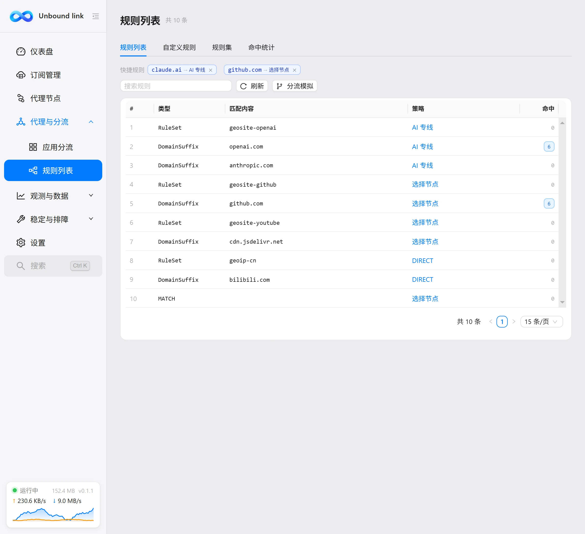
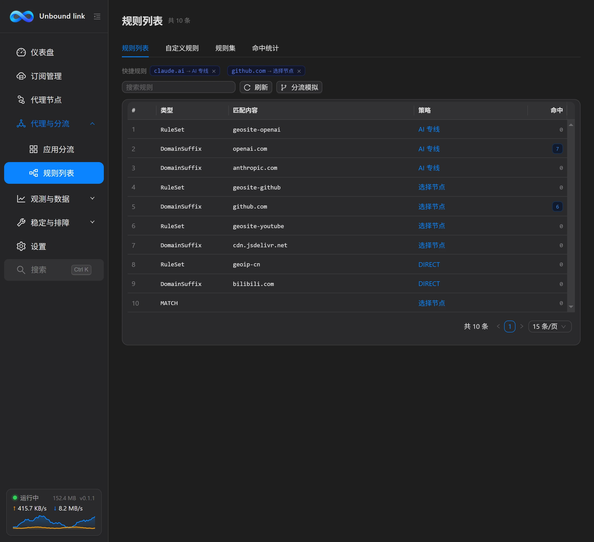
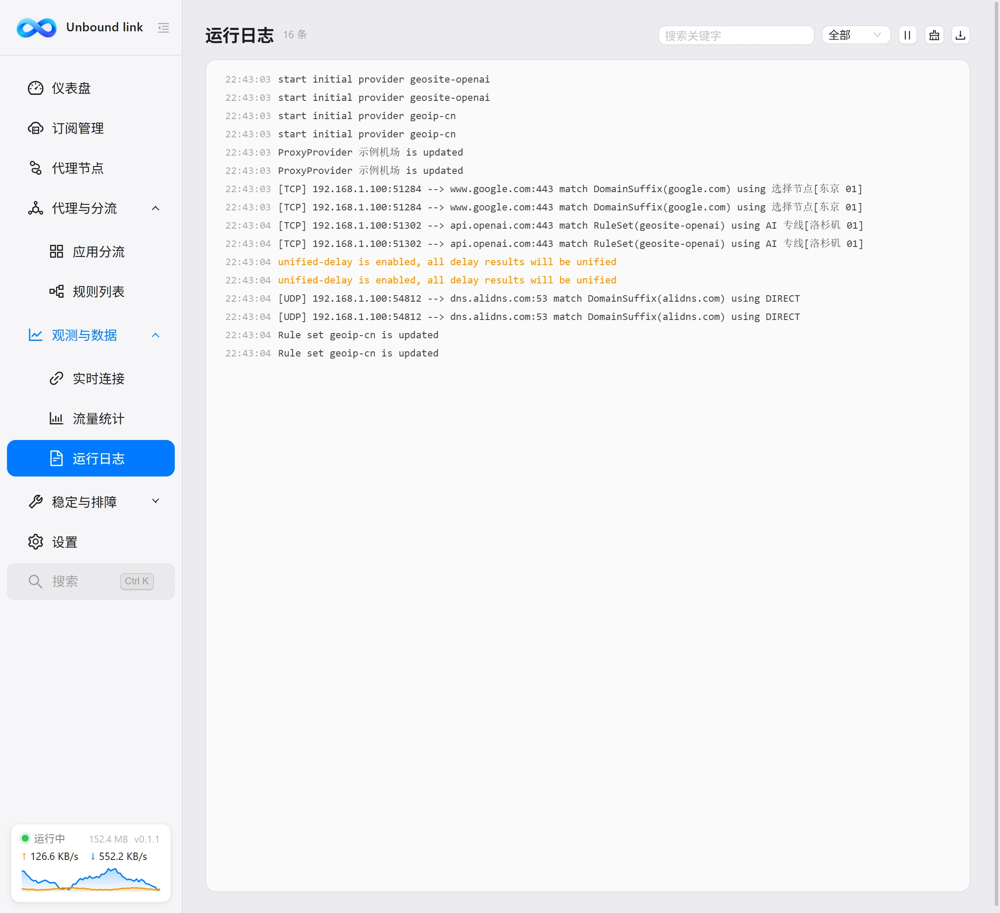
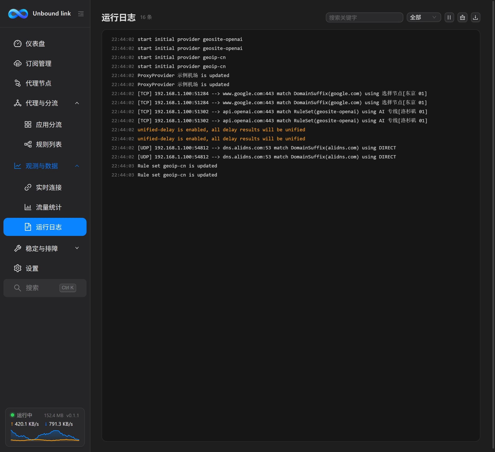
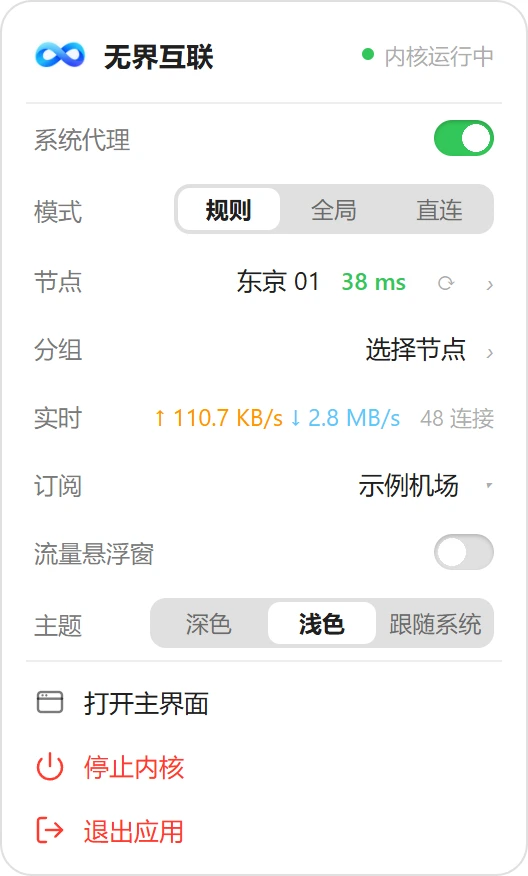
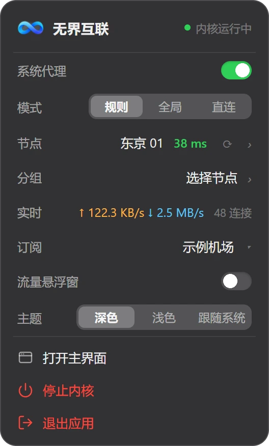
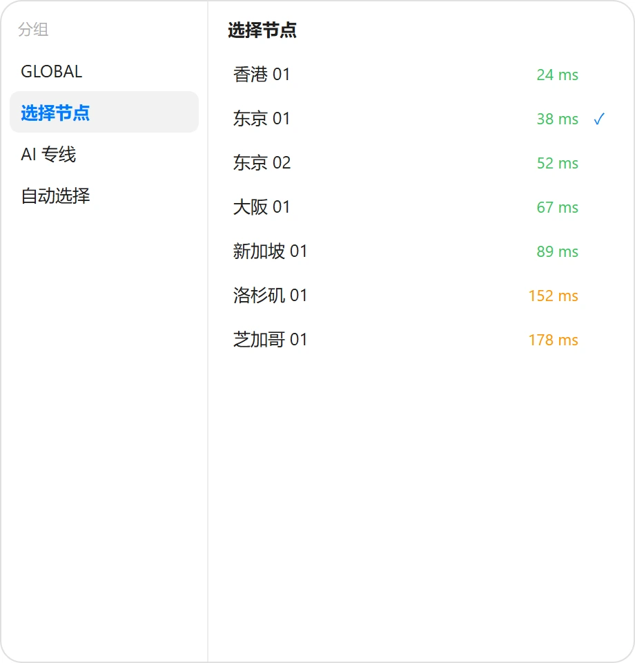
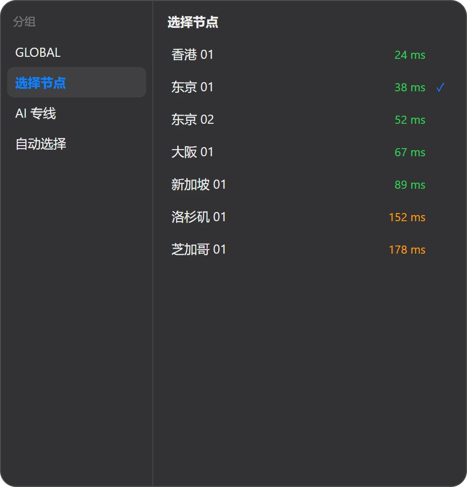
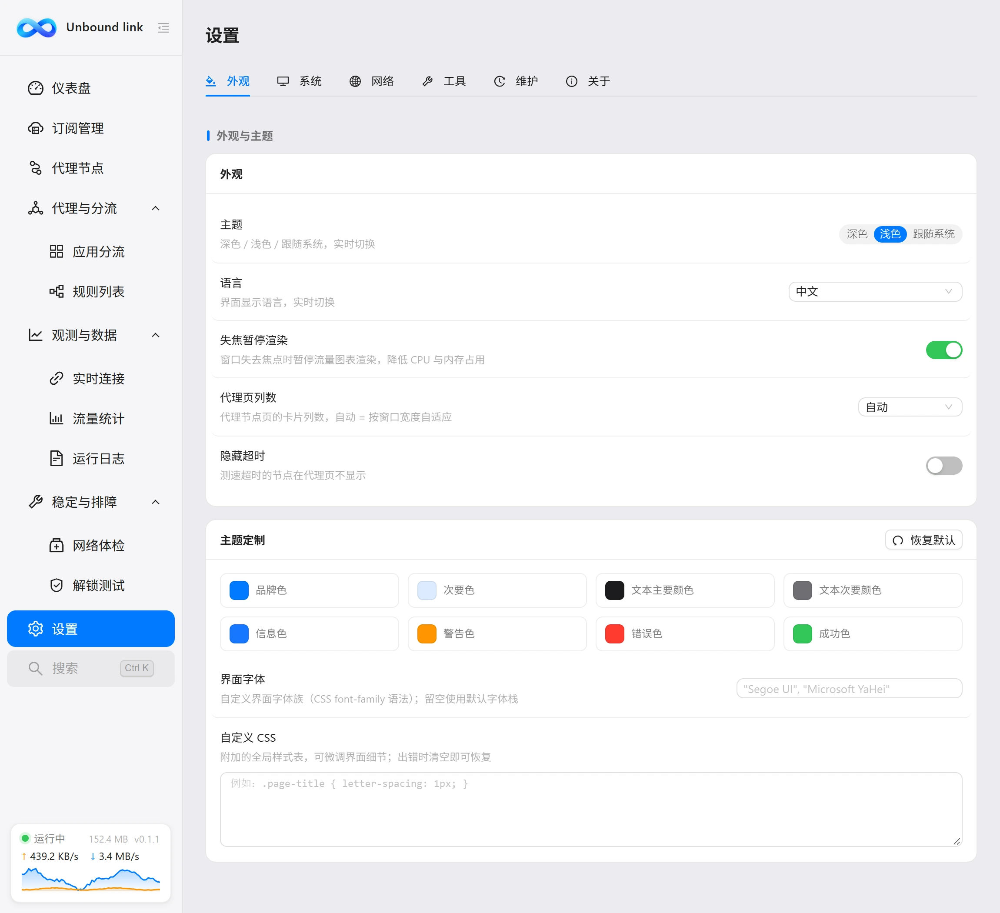
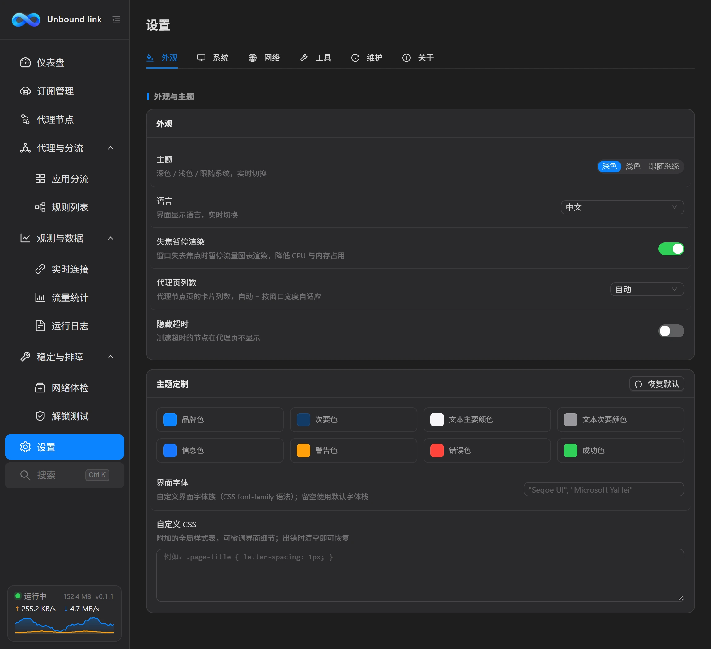

左侧菜单按使用场景分成三组：先在「代理与分流」配好线路，再到「观测与数据」看清运行状态，「稳定与排障」处理突发问题。下面板块里的截图都来自客户端真实界面（演示数据），会随站点明暗主题自动切换。
把「流量走哪条线」这件事拆成三层：订阅决定有哪些线路，规则决定默认怎么走，应用分流决定例外怎么走。
支持 http/https 订阅链接导入，机场官网的「导入到 Clash / sing-box / Hiddify」按钮点一下即可唤起本软件完成导入；也可导入本地 YAML 配置文件，或粘贴节点链接导入单个节点。卡片可拖动排序、重命名、生成二维码分享给手机、一键刷新用量信息，订阅下载时还会自动识别机场官网并检测连通状态；可同时启用多个订阅，支持按小时间隔自动更新，更新后自动重载配置并发送系统通知，还可设置更新后自动测速并切换到最快节点；流量达到阈值、临近到期或已过期时各提醒一次；更新前自动留档旧版本，随时可回滚。
左右分栏：左边按分组与订阅来源浏览，右边节点卡片网格。支持单节点测延迟、下载测速（测完自动恢复原节点）、全部测速、按延迟/名称排序、按地区筛选、只看收藏；顶部可一键「隐藏超时」节点，卡片列数支持 1 - 4 列或自适应，也能按设定间隔自动为节点组测延迟；开启「节点健康监控」后，卡片上还会多一条延迟趋势折线（红点表示测速失败），开启「掉线自动切换」后连续测速失败的当前节点还会被自动切走；列表与地图双视图随时切换，地图把节点按地区聚合成光点，大小看数量、颜色看延迟，点一下即按地区下钻筛选。
按进程名或完整路径把应用绑定到指定线路，可直接从正在联网的进程里挑选。选两条以上线路自动聚合，可选轮询分散或会话保持；列表里能看到该应用当前的实时速率。
为某个节点指定前置代理，流量先经中转再出去，适合受限节点。可视化链路编辑器支持拖拽调整中间环节、跨分组挑选节点、把代理组放在链首，已保存的链路可回显编辑；节点卡片上有链式标记与「入口 / 中转 / 出口」角色标签，悬停即显示经由哪一个前置。
把本机端口转发到远端目标：内核在本地监听指定端口，经指定出口（代理组、节点或按规则分流）转发到目标主机，适合把远端内网服务映射到本机使用。支持 TCP / UDP / 混合协议。
在实时连接页右键任意连接，选「此域名直连」或「此域名走指定线路」，立刻生成一条插在最前面的域名规则，当场生效，不用改文件也不用重启。
规则列表、自定义规则、规则集、命中统计四个页签，可在规则页直接增删改并排序自定义规则，保存后注入运行配置最前。命中统计每 15 秒采样一次，累计落盘，重启软件也不清零——用来判断某条规则到底有没有在工作；内置分流模拟器，本地预演某个域名、IP 或应用会命中哪条规则（含策略组出口解析），内核没启动时也能排查分流问题。
哪条规则在干活、哪条从没命中过，看一眼统计就知道；改规则之前，还能先用模拟器把分流结果预演一遍。


代理的痛点往往是「不知道现在发生了什么」。所以每个状态都有对应的地方可看。
内核状态、版本、内存占用与运行时长，累计上下行与活跃连接数，实时流量曲线；并可直接在仪表盘切换各代理组的当前节点。
明细视图按连接逐行展示主机、进程、目标地址、命中规则、链路与实时速率；聚合视图按域名汇总连接数。右键即可为域名创建快捷规则或复制域名、目标地址、进程路径。
按日记录上下行用量，可切换近 7 天 / 近 30 天 / 近 90 天 / 全部，配趋势图与日期明细表，也能按应用进程累计上下行流量，看清谁最占带宽；另有「按节点流量」面板，把流量汇总到出口节点名下（直连流量记为 DIRECT），每条线路各用了多少一目了然，可一键重置统计。数据持续落盘，重启不清零。
内核日志与应用层日志同屏呈现，应用层日志带 [无界互联] 前缀以便区分；可按调试 / 信息 / 警告 / 错误筛选，日志同时写入 logs\app.log，自动轮转与过期清理。
实时网速、当前节点延迟、活跃连接数、今日流量与代理状态悬在桌面。3 档尺寸、3 种版式、7 套配色，可调不透明度，可鼠标穿透，位置自动记住。
托盘图标随代理状态三态切换（常规 / 系统代理 / TUN），三态均可替换为自己的 PNG 图标；右键弹出快捷面板，不用打开主窗口就能切系统代理、切 TUN、看速度、开主界面；点击面板中的「节点」或「分组」行，旁边会弹出独立的节点选择浮层，按分组浏览、点选即切换。
代理出问题时，日志是第一现场。应用层的操作记录带 [无界互联] 前缀，和内核输出排在一起，谁在说话一眼分清。
logs\app.log，按大小轮转、按天数清理。

右键托盘图标弹出快捷面板：系统代理、模式、节点、实时速度都在一屏之内；点「节点」或「分组」行，旁边再弹出独立的选择浮层，点选即切换。




该接管系统的部分接管系统，该留在本机的部分留在本机。
一键写入或还原 Windows Internet 设置；开启「网络环境」后，还能按当前 Wi-Fi 名称自动切换系统代理与运行模式（如到家自动开、到公司自动停）。TUN 通过虚拟网卡在网络层接管全部流量，堆栈可选 Mixed / Gvisor / System，需要管理员权限时会引导 UAC 提权重启；系统代理设置被其他程序改写时会自动恢复。商店应用受系统回环限制无法访问本机代理时，可在「UWP 应用工具」里一键解除。
可自定义 DNS 服务器（含备用 DNS 与静态 Hosts）覆盖订阅配置，可选择 fake-ip 加速；开启「允许局域网连接」后，同网段的手机、平板等设备可直接使用本机代理，同一行的「分享到手机」按钮会弹出二维码，按提示在手机 Wi-Fi 里填好手动代理即可。
内置 MetaCubeXD 面板，首次打开自动下载托管，地址 http://127.0.0.1:9090/ui/；开启局域网后还会显示可供其他设备访问的面板地址。
默认 Ctrl+Shift+P 切换系统代理、Ctrl+Shift+T 切换 TUN、Ctrl+Shift+U 显示主窗口、Ctrl+Shift+O 开关悬浮窗、Ctrl+Shift+M 切换代理模式，另有「更新全部订阅」「重启内核」可自行录制，全部可自定义或恢复默认。
按 Ctrl+K 在任意页面呼出：跳转页面与设置分类、执行启停内核 / 切换模式等动作、更新与启停订阅、检查更新与备份恢复、断网急救、搜索并切换节点，全部支持关键词过滤，键盘即可完成。
可设置开机自动运行；程序保证单实例运行，重复启动时唤出已有窗口，不会出现两个内核抢端口。关闭主窗口默认最小化到托盘而不是退出。全新安装首次启动会弹出四步引导，带你完成订阅导入与推荐设置。
深色 / 浅色 / 跟随系统三档，实时切换；品牌色、次要色、文本色、语义色、界面字体与自定义 CSS 均可调。界面为扁平化设计，主按钮为黑色，语义色克制使用——蓝表示进行中，绿表示正常，琥珀表示待处理，红表示异常。
界面支持 13 种语言——English、Русский、中文、فارسی、한국어、Türkçe、Deutsch、Español、日本語、繁體中文等，切换即时生效；阿拉伯语与波斯语自动切换为从右到左布局，数字与时间随所选语言格式化，复数与量词按当地语法习惯显示。
设置页不再是望不到头的长列表：六个页签下按分组与卡片排布，想改的每一项都有明确的位置。


订阅保持原始、你的改动单独存一份，两者在生成运行时配置时才合并——这意味着订阅源更新不会冲掉你的个人设置。
main(config) 函数批量改写节点名、增删规则。把设置、订阅、Merge 配置与内核版本导出为一个 JSON 文件；换电脑或重装后在「设置 → 维护」一键导入，覆盖当前数据。另有「导出诊断信息」，把版本、设置、配置与最近日志打包为 ZIP（敏感字段打码），反馈问题更方便。
把设置、订阅、Merge 配置与扩展脚本备份到自己的网盘（兼容坚果云、Nextcloud、群晖等），带连接测试、状态对比与一键上传、恢复；密码经系统加密后只保存在本机。
启动时自动检查客户端新版本，发现后可在应用内直接下载并静默安装，装完自动以新版本启动；内核与 GeoIP / GeoSite 等 GeoData 数据库也可在「设置 → 维护」一键更新，直连下载失败时自动走加速镜像或本机代理。
内核异常退出时自动拉起，并带有防抖动限制：短时间内反复崩溃不会陷入无限重启，而是如实记录在运行日志里。
代理软件出问题时最难受的是不知道问题在哪。这里把「诊断」和「修复」拆成了两步。
内核状态、端口监听、系统代理、DNS 解析、DNS 接管、直连出口、代理出口、WebRTC 泄漏、当前节点、GitHub 直连、配置加载。每项给出结论，异常项附带建议。
针对系统代理残留、DNS 解析失败、DNS 服务器被改写、hosts 文件异常、网络协议栈损坏五类问题，逐项检测并给出对应修复按钮，修完自动复检。
经当前出口检测 18 项服务的可用性，覆盖 Netflix、Disney+ 等流媒体，ChatGPT、Claude 等 AI 服务与 B 站等国内平台，给出「解锁 / 部分解锁 / 未解锁 / 失败」四态结论与说明；页面内可直接切换出口节点挑线路，换线即刻复测。
「一键急救」里的重置系统代理与刷新 DNS 缓存都不需要管理员权限，随时可用；只有重置 DNS 服务器、恢复 hosts 文件、重置网络协议栈会通过 UAC 提权执行，并在界面上明确标注。